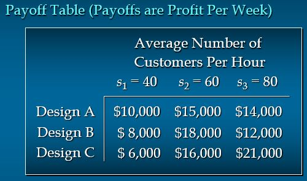
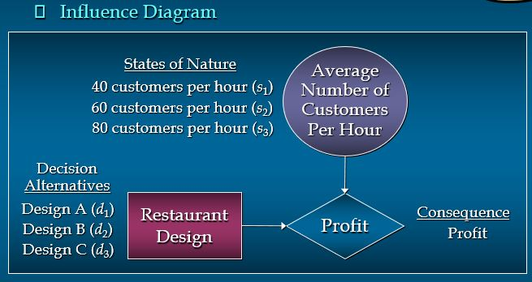
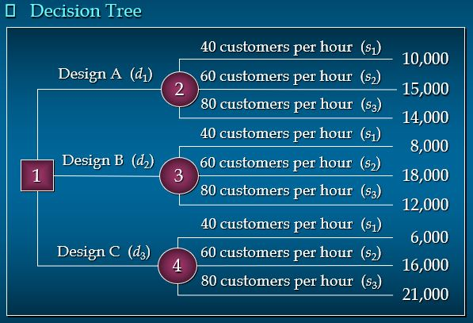
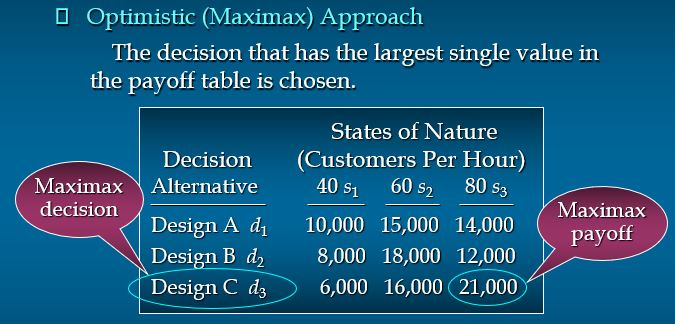
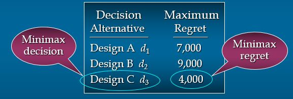
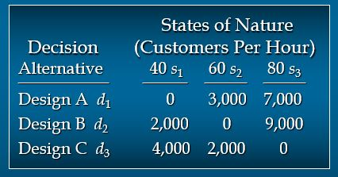
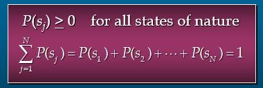
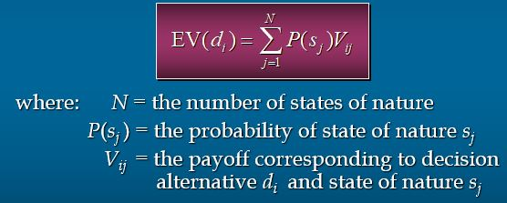
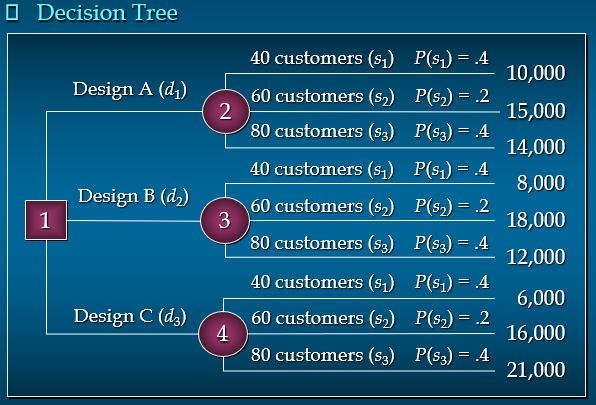
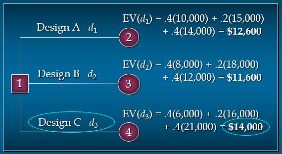

Decision Analysis
1. Problem Formulation
The first step in the decision analysis process is problem formulation, followed by:
- The decision alternatives
- The state of nature (uncertain future events)
- The payoffs (consequences) associated with each specific combination of decision alternative and state of nature
Example:
Burger Prince Restaurant is considering opening a new restaurant on Main Street.
The company has three different building designs (A, B, and C), each with a different seating capacity. Burger Prince estimates that the average number of customers arriving per hour will be 40, 60, or 80.
Solution:
-
Identify the decision alternatives and use d1, d2, and d3 to represent the alternatives.
- d1 use building design A
- d2 use building design B
- d3 use building design C
-
Identify the different states of nature and use s1, s2, and s3 to represent these states of nature.
- s1 an average of 40 customers arriving per hour
- s2 an average of 60 customers arriving per hour
- s3 an average of 80 customers arriving per hour
-
Design the payoff table.
The consequence resulting from a specific combination of a decision alternative and a state of nature is a payoff.
A table showing payoffs for all combinations of decision alternatives and states of nature is a payoff table.
Payoffs can be expressed in terms of profit, cost, time, distance or any other appropriate measure.

The relationships among the decisions, the chance events, and the consequences can be illustrated by an influence diagram. An influence diagram is a graphical device showing the following:
- Squares or rectangles depict decision nodes.
- Circles or ovals depict chance nodes.
- Diamonds depict consequence nodes.
- Lines or arcs connecting the nodes show the direction of influence.

Another way to show the chronological representation of the decision problem is the decision tree.
A decision tree has two types of nodes:
- Round nodes correspond to chance events.
- Square nodes correspond to decisions.
Branches leaving a round node represent the different states of nature; branches leaving a square node represent the different decision alternatives. At the end of a limb of the tree is the payoff attained from the series of branches making up the limb.

2. Decision Making without Probability
Criteria for decision making:
- Optimistic (Maximax) Approach
- Conservative (Maximin) Approach
- Minimax Regret Approach
For the succeeding examples, we will still use the Burger Prince Restaurant problem.
2.1 Optimistic (Maximax) Approach
The optimistic approach would be used by an optimistic decision maker. The decision with the overall largest payoff is chosen.
If the payoff table is in terms of costs, the decision with the overall lowest cost will be chosen.

Using the optimistic or the maximax approach, the best decision is to select d3 or building design C.
2.2 Conservative (Maximin) Approach
The conservative approach would be used by a conservative decision maker. For each decision, the minimum payoff is listed.
The decision corresponding to the maximum of these minimum payoffs is selected. If payoffs are in terms of costs, the maximum
costs will be determined for each decision and then the decision corresponding to the minimum of these maximum costs will be selected.

Using the conservative or the maximax approach, the best decision is to select d1 or building design A.
2.3 Minimax Regret Table
The minimax regret approach requires the construction of a regret table or an opportunity loss table.
This is done by calculating (for each state of nature) the difference between each payoff and the largest payoff for that state of nature.
Then, using this regret table, the maximum regret for each possible decision is listed.
The decision corresponding to the minimum of the maximum regrets is chosen.

Using the minimax regret approach, the best decision is to select d3 or building design C.
3. Decision Making with Probability
3.1 Assigning Probabilities
Once we have defined the decision alternatives and states of nature for the chance events, we focus on determining probabilities for the states of nature.
The classical, relative frequency, or subjective method of assigning probabilities may be used.
Because only one of the N states of nature can occur, the probabilities must satisfy two conditions:

3.2 Expected Value Approach
We use the expected value approach to identify the best or recommended decision alternative.
- The expected value of each decision alternative is calculated.
- The decision alternative yielding the best expected value is chosen.
The expected value of a decision alternative is the sum of the weighted payoffs for the decision alternative.

Using the Burger Prince problem, suppose the following probabilities are given for each state of nature
- P(s1) = 0.4
- P(s2) = 0.2
- P(s3) = 0.4
Since the probability is known for each state of nature, we now use the expected value approach to select the best decision.

Steps:
- Calculate the expected value (EV) for each decision.
- The decision tree on the next slide can assist in this calculation.
- Here d1, d2, d3 represent the decision alternatives of Designs A, B, and C.
- And s1, s2, s3 represent the states of nature of 40, 60, and 80 customers per hour.
- The decision alternative with the greatest EV is the optimal decision.

Using the expected value approach, the best decision is to select d3 or design C.